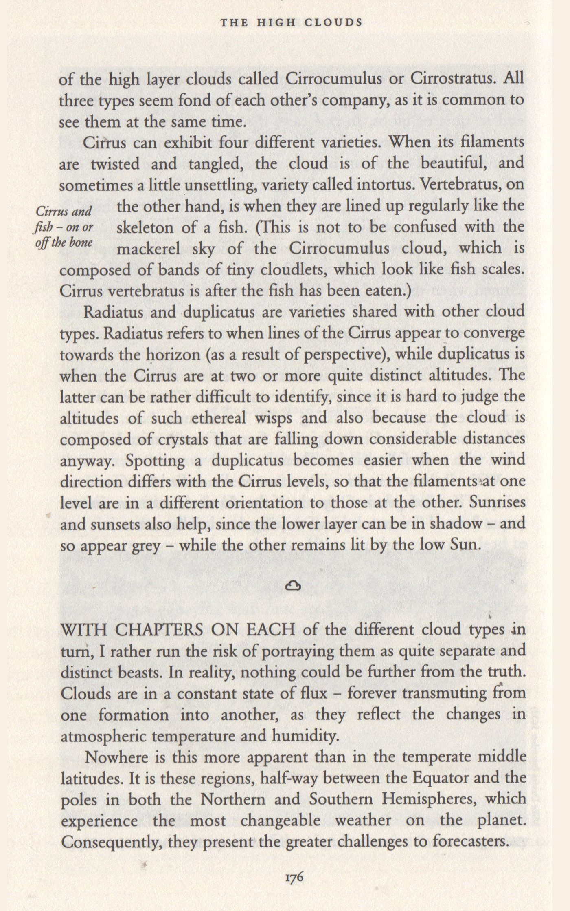
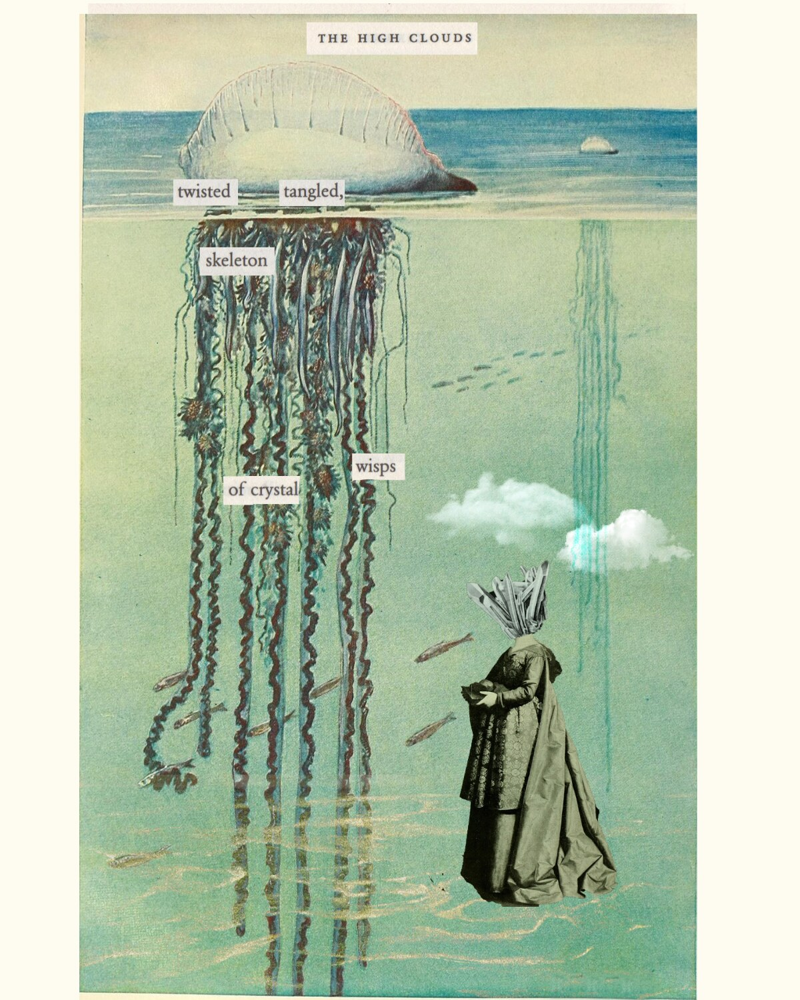
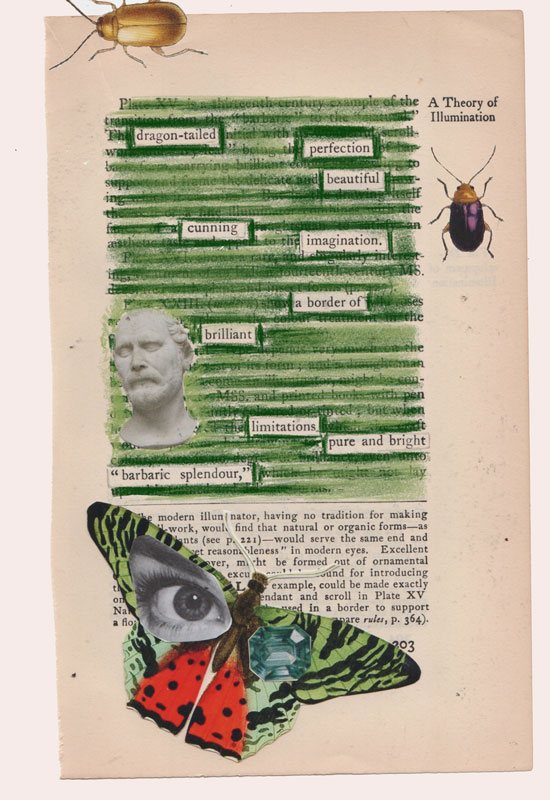
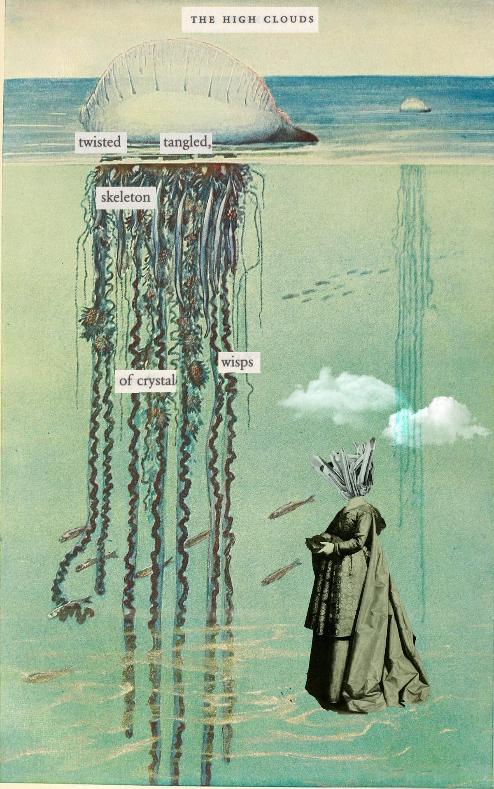
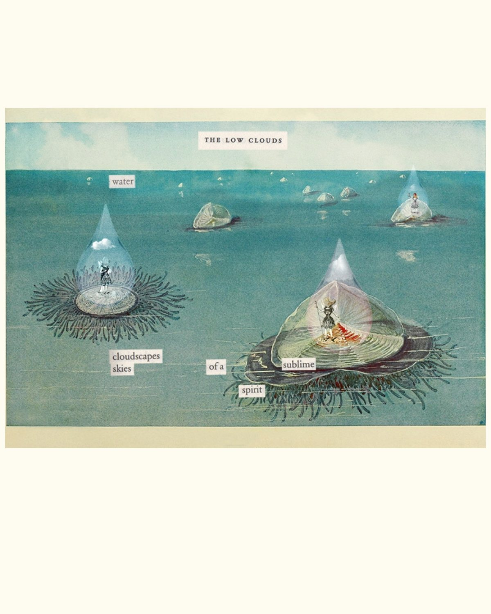
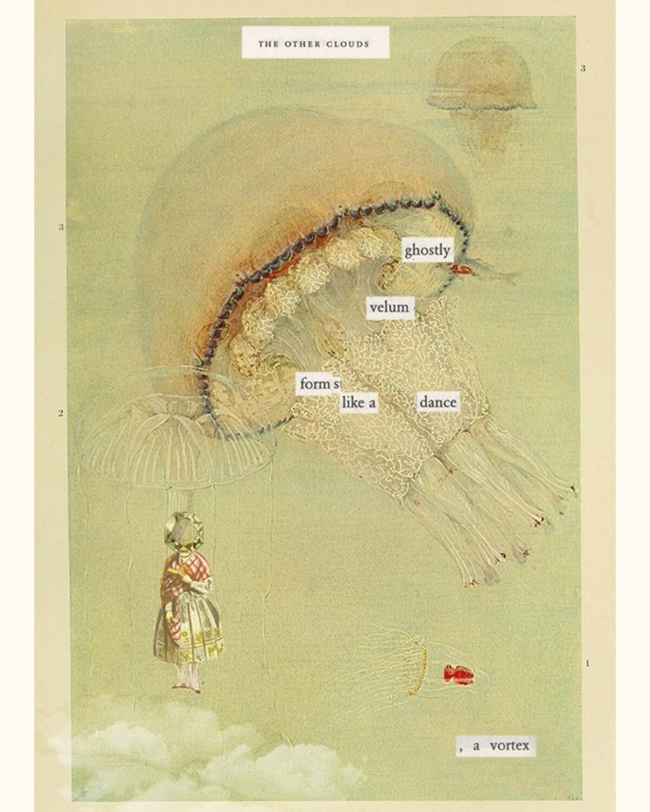
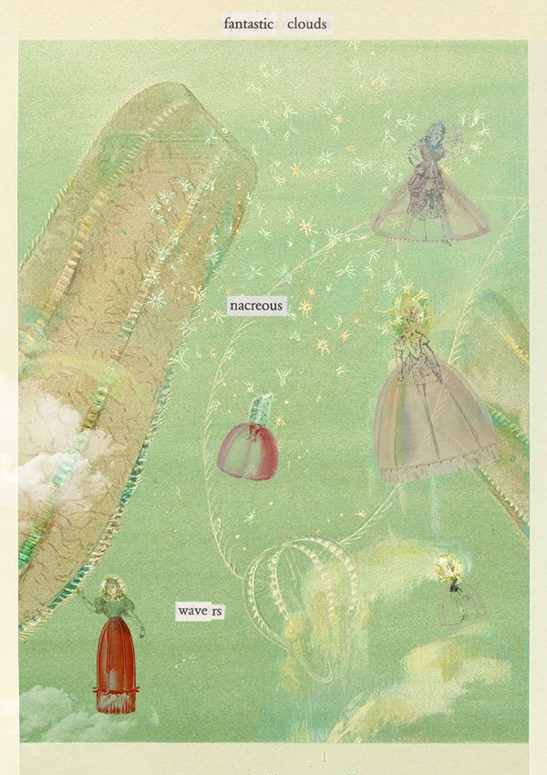

Listening to data and the people it represents.
An erasure poem titled The High Clouds, shown here building up in the layers it was made from: first the bare Victorian source page on cloud classification, then the sea-creature illustration that replaces it — a Portuguese man o' war trailing its tendrils below the waterline — and finally the extracted words arriving on top — twisted, tangled, skeleton, of crystal, wisps — with a cloaked, crystal-headed figure standing in the shallows.


Scroll
I design and deliver bespoke consultations using both data and discussions with the people the data represents. This ensures stakeholders are meaningfully consulted and strategic actions arising have an evidence base rooted in human experience.
In this example I worked for a small specialist Higher Educational institution. Such institutions may be dealing with groups of 20 students rather than 2000 or even 200. I develop bespoke solutions for each individual context. In this case, external data had to be analysed through the lens of the lived experience of students if it was to be meaningful.

An erasure poem keeps two stories legible: the full text beneath the wash, the selected text above it, echoing the layered stories told by data and by humans.
In my consultation, I go to where stakeholders thrive and feel comfortable; here this was in their teaching spaces in small, informal discussion groups.
I worked organically and in dialogue with stakeholders. At first student groups worked with me to discuss external data. Then we discussed ideas, and reflected on the plans we had made.
My consultations involve stakeholders in the whole journey of designing policy or strategy. Their voices inform both the design and delivery of projects.
Further information about the consultation can be found in the Higher Education Provider's Access and Participation Plan 2025–29
Truths are revealed in personal stories as well as the external text.
In this case, my consultation showed that students agreed with the data findings, but also showed an important layer; different stories and alternative classifications, which recognised complexities not found in the centralised space.
I use poetic and material methods in discussion groups. Erasure poetry workshops invite stakeholders to create new meanings from existing texts, creating artefacts that hold two datasets at once: the poems below draw out different stories from the underlying text. Erasure poems become a form of data visualisation: two meanings of the same text can co-exist.

twisted, tangled, skeleton wisps of crystal
water, cloudscapes, skies of a sublime spirit
ghostly velum, forms like a dance, a vortex
nacreous waversRead in sequence, the four panels form one sapphic stanza: twisted, tangled, skeleton of crystal, wisps — water, cloudscapes, skies of a sublime spirit — ghostly velum, form s like a dance, a vortex — nacreous... wave rs. Three long lines, one short — a sapphic stanza, created and curated through dialogue with different sources.
Using creative methods lets me work with institutions, external data and stakeholders, so that the people the record describes can see how they are described, and talk back to their own catalogue entry.
My latest project, Botanica, asks the public the same question this consultation asked students, but this time using plants as a visual metaphor: how would you like to be represented as data?